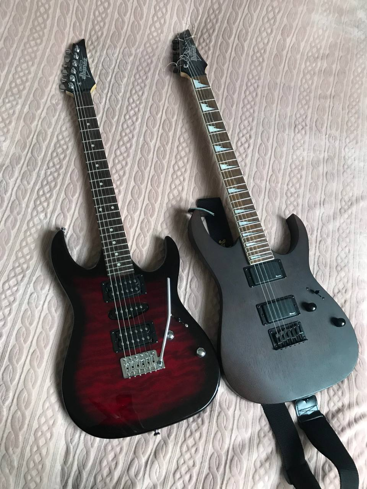

| Elements of comparison: | IBANEZ GRG121DX-WNF | IBANEZ GRX70QA-TRB |
|---|---|---|
| Color: | Walnut Flat | Transparent Red Burst |
| Coat: | Matte | Glossy |
| Body type: | Superstrat | |
| Body: | Aucoumea klaineana | Poplar |
| Guitar neck: | Maple | |
| Scale length: | 648 mm | |
| Fret: | 24 | 22 |
| Pickups: | 2 humbuckers | 2 humbuckers + 1 single |
| 2x IBZ-6 Humbucker | 2x Infinity R Humbucker, 1x Infinity RS Single-Coil | |
| Control: | 1 tone and 1 volume | |
| Switch: | 5 | |
| Tremolo: | No | Yes |
| Manufactured: | China | |
| Strings: | .010/.013/.017/.026/.036/.046 | .009/.011/.016/.024/.032/.042 |
Which guitar sound do you like more? Which guitar sounds heavier? Leave your comments on YouTube :) I hope I helped you with your choice.
